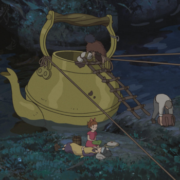
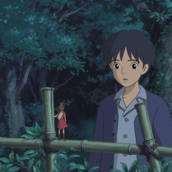
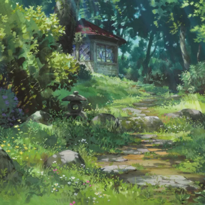
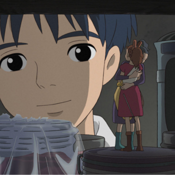
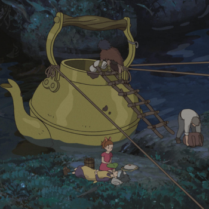
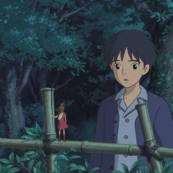
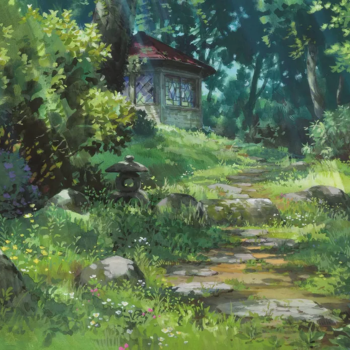
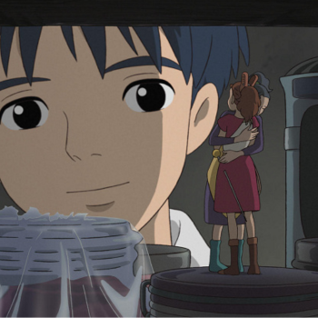

O Mundo dos Pequeninos é um filme de animação japonês de 2010, sendo a estreia de Hiromasa Yonebayashi na direção. Foi baseado no romance Os Pequeninos Borrowers, de Mary Norton, com roteiro de Hayao Miyazaki e Keiko Niwa e produção do Studio Ghibli.
Lançado em 17 de julho de 2010 no Japão, O Mundo dos Pequeninos recebeu críticas muito positivas, elogiando as canções do filme, sendo ainda a maior bilheteria japonesa em 2010. O filme ganhou o Prêmio de Animação do Ano na 34ª edição dos Prêmios da Academia do Japão.
Sinopse:
Informações extas:
Nos subúrbios de Tóquio, sob o assoalho de uma casa velha, Arrietty vive em seu minúsculo mundo com a família, fazendo de tudo para manter em segredo a existência de todos. Sobrevivendo como pequenos ladrões, eles conhecem as regras para que nunca sejam percebidos pelos verdadeiros – e grandes – donos da casa. Para isso, procuram manter a desconfiança deles em cima dos gatos e ratos e tomam todos os cuidados possíveis para evitar de serem vistos. Contudo, quando um jovem rapaz se hospeda na casa, a pequenina Arrietty acredita que poderá manter uma amizade com ele, apesar da diferença de tamanhos.
A história se passa em 2010 no bairro de Koganei, no oeste de Tóquio. Koganei também é onde o Studio Ghibli está localizado.
Aos 36 anos, Hiromasa Yonebayashi foi a pessoa mais jovem a dirigir um filme para o Studio Ghibli.
No Brasil, O Mundo dos Pequeninos chegou em DVD pela Califórnia Filmes em versão dublada e legendada. Atualmente está disponível junto a mais outros 20 filmes do Studio Ghibli na plataforma de streaming da Netflix.
 






